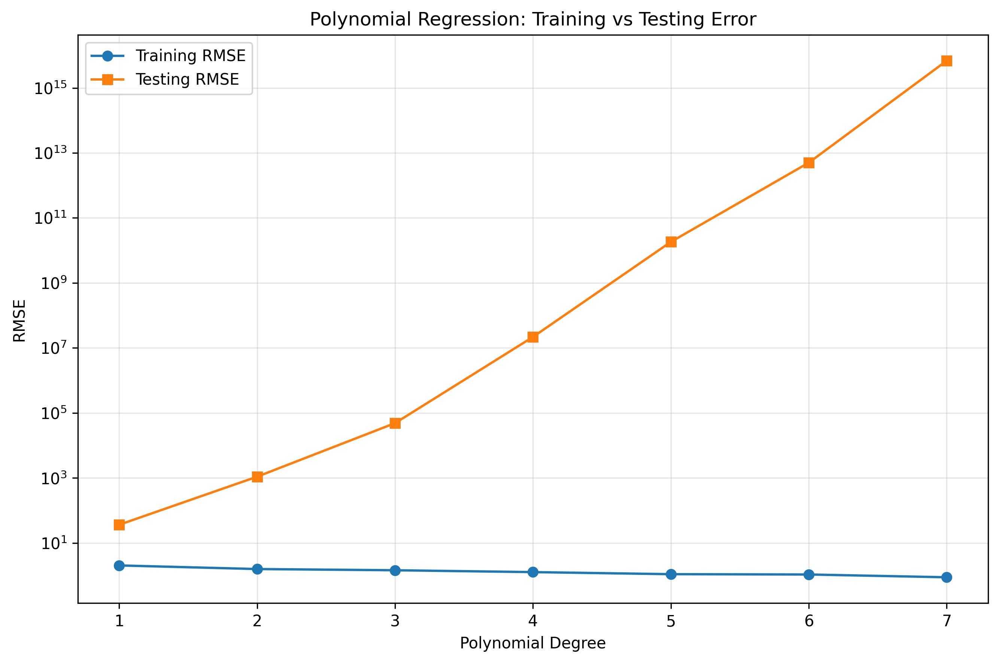
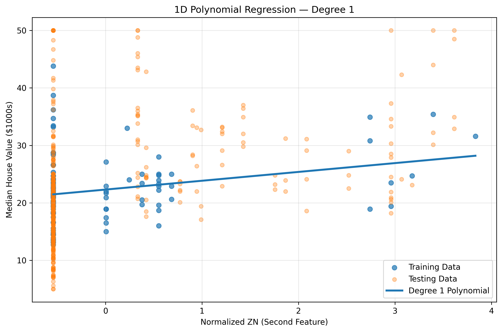
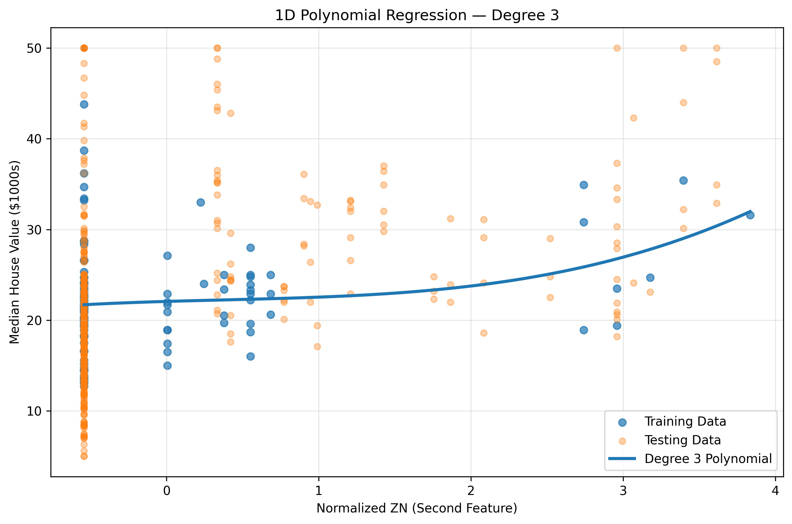
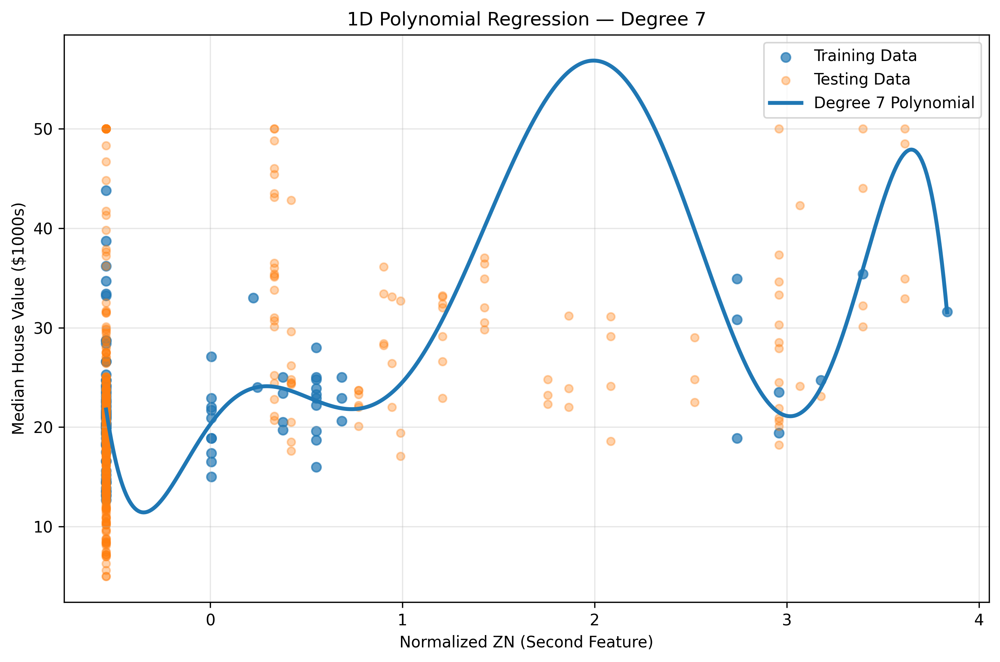
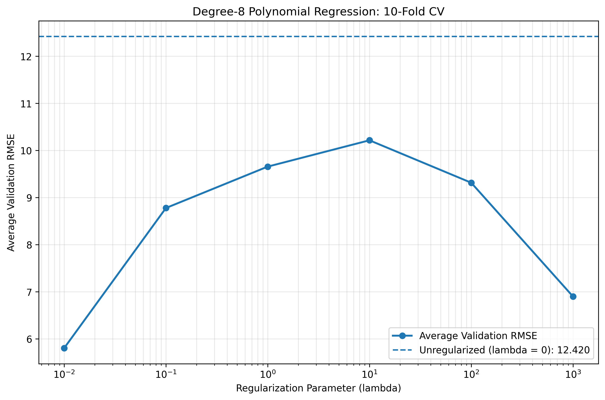
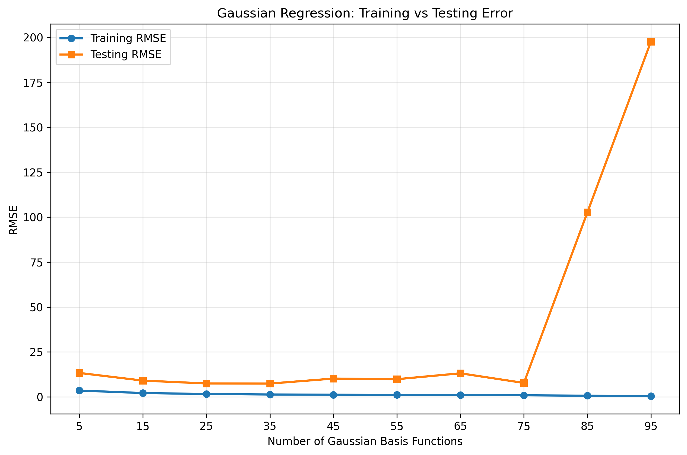
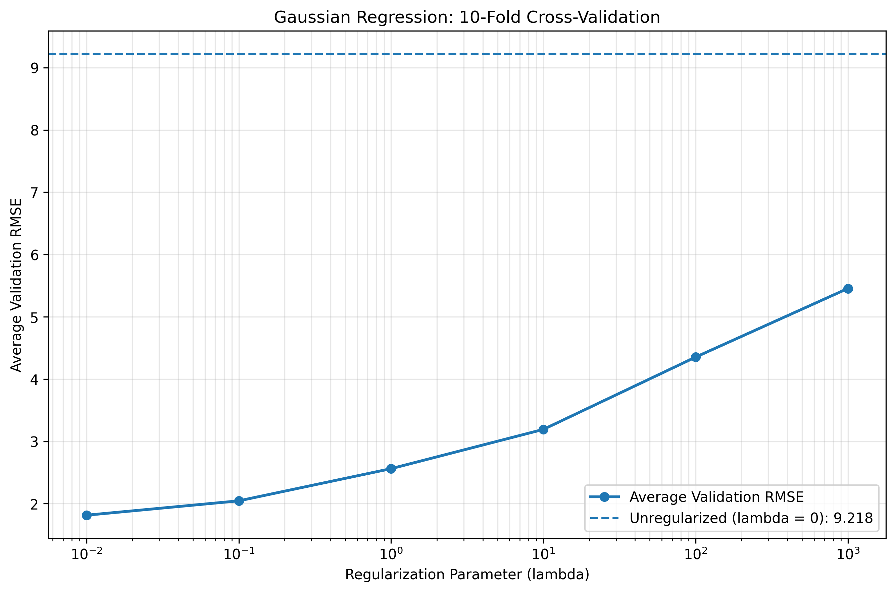

Overview
This assignment compares polynomial and Gaussian linear basis-function regression to predict median house values using the historical Boston Housing dataset. I implemented the basis matrices, least-squares models, L2-regularized models, and cross-validation using NumPy.
Preparation
The first 100 records are used for fitting and the remaining 406 for testing. Each feature is standardized using the training subset mean and standard deviation. Zero training standard deviations are replaced by 1 to avoid division by zero.
Evaluation
Training and testing errors are reported as root mean squared error (RMSE). Hyperparameters in Questions 1(d) and 2(f) are chosen using 10-fold cross-validation on only the first 100 observations.
Polynomial Basis Regression: Degrees 1–7
For polynomial degree p, I use a bias term and separate powers of each of the 13 standardized features. As required, the basis contains no feature interactions or cross-terms.
Weights are fitted using unregularized least squares, and RMSE is evaluated independently on the training and testing subsets.
| Polynomial degree | Training RMSE | Testing RMSE |
|---|---|---|
| 1 | 2.037201 | 36.44495 |
| 2 | 1.578079 | 1.097188 × 10³ |
| 3 | 1.449098 | 4.867282 × 10⁴ |
| 4 | 1.270498 | 2.185931 × 10⁷ |
| 5 | 1.096636 | 1.835804 × 10¹⁰ |
| 6 | 1.072510 | 5.024089 × 10¹² |
| 7 | 0.881467 | 6.879332 × 10¹⁵ |

Degree-1 Model: Learned Weights
The degree-1 basis is [1, z1, …, z13], so the coefficient on each feature measures the change in predicted MEDV for a one-training-standard-deviation increase in that feature, holding the others constant. The bias weight is explicitly included.
| Coefficient | Feature | Learned value |
|---|---|---|
| w₀ | Bias (intercept) | 22.309000 |
| w₁ | CRIM | −1.337974 |
| w₂ | ZN | +0.122993 |
| w₃ | INDUS | −0.531065 |
| w₄ | CHAS | 0.000000 |
| w₅ | NOX | +1.002651 |
| w₆ | RM — average rooms | +4.195634 |
| w₇ | AGE | −2.166275 |
| w₈ | DIS — distance to employment | +0.010715 |
| w₉ | RAD | −0.193778 |
| w₁₀ | TAX | −0.348631 |
| w₁₁ | PTRATIO | +0.261264 |
| w₁₂ | B | +0.181073 |
| w₁₃ | LSTAT | +0.148761 |
RM: A positive coefficient is reasonable: holding other standardized features constant, one training-standard-deviation increase in the average number of rooms is associated with about a $4,196 increase in predicted median value. DIS: The coefficient is almost zero, so weighted distance to employment centers contributes little additional linear prediction in this fitted model; its small positive sign should not be over-interpreted.
One-Dimensional Polynomial Visualizations
To make high-dimensional behavior visible, the regression is refitted using only the second normalized feature (ZN), with degrees 1, 3, and 7. Each plot shows training observations, held-out testing observations, and the learned curve.
| Degree | Training RMSE | Testing RMSE |
|---|---|---|
| 1 | 5.695083 | 9.352257 |
| 3 | 5.664927 | 9.434054 |
| 7 | 5.500617 | 10.423300 |



Polynomial L2 Regularization: 10-Fold CV
A degree-8 polynomial on the second feature (ZN) is fitted using L2-regularized least squares. The intercept is not penalized. The 100 training observations are split into 10 folds using seed 42; normalization is recomputed using each fold's fitting data, preventing leakage from validation observations.
λ ∈ {0, 0.01, 0.1, 1, 10, 100, 1000}. The plotted value is the mean validation-fold RMSE.
| λ | Average validation RMSE |
|---|---|
| 0 | 12.419501 |
| 0.01 | 5.805655 |
| 0.1 | 8.779093 |
| 1 | 9.657738 |
| 10 | 10.216411 |
| 100 | 9.315975 |
| 1000 | 6.901574 |

Gaussian Basis Regression: 5–95 Centers
Gaussian basis functions replace the polynomial feature expansion. The centers are chosen as the first K entries of one reproducible random permutation of the training observations. All 13 standardized features are used, and no regularization is applied.
Width choice: σ = 4.624722 (σ² ≈ 21.3881), the median positive pairwise training distance after normalization; random seed = 42.
| No. of basis functions (K) | Training RMSE | Testing RMSE |
|---|---|---|
| 5 | 3.546369 | 13.334609 |
| 15 | 2.158441 | 9.086658 |
| 25 | 1.629604 | 7.488790 |
| 35 | 1.354419 | 7.426775 |
| 45 | 1.233386 | 10.208066 |
| 55 | 1.113216 | 9.860084 |
| 65 | 1.082091 | 13.141845 |
| 75 | 0.910347 | 7.780206 |
| 85 | 0.677350 | 102.701264 |
| 95 | 0.423764 | 197.634615 |

Gaussian L2 Regularization: 10-Fold CV
Here I use K = 90 Gaussian basis functions, all 13 input features, and the same seven candidate λ values. Each of the 10 folds contains 90 fitting observations and 10 validation observations. The mean, standard deviation, Gaussian width, and centers are determined exclusively from each fold's fitting data; the same centers are used to evaluate every λ within a fold.
Ridge regularization penalizes the 90 Gaussian coefficients but not the bias. The reported validation error is the average RMSE across the ten cross-validation folds.
| λ | Average validation RMSE |
|---|---|
| 0 | 9.218162 |
| 0.01 | 1.814715 |
| 0.1 | 2.045118 |
| 1 | 2.561606 |
| 10 | 3.191843 |
| 100 | 4.352415 |
| 1000 | 5.454169 |

Final Discussion
Model complexity
For both polynomial and Gaussian bases, additional model complexity consistently reduces training error but can sharply increase testing error. Lower training RMSE by itself is not sufficient evidence of better prediction.
Why regularization helps
L2 penalties discourage large fitted weights. In both degree-8 ZN regression and 90-center Gaussian regression, cross-validation selected λ = 0.01 from the specified candidate values, outperforming the unregularized model.
Training and testing RMSE differ by orders of magnitude partly because the split is not random — rows 1–100 are not a representative sample of the full 506. Several features (e.g., ZN, TAX, RAD) are nearly sorted across the dataset, so the training slice under-represents the range seen at test time. For the same reason, cross-validation RMSE in 1(d)/2(f) (computed only within the first 100 rows) is not a reliable estimate of true test performance.
Full Python Source Code
"""SYDE 572 Assignment 2 — Part 1: polynomial basis regression.
Reproducible implementation of Questions 1(a)–1(d).
Requires numpy, matplotlib, and housing.data in the same folder.
"""
from pathlib import Path
import numpy as np
import matplotlib.pyplot as plt
BASE_DIR = Path(__file__).resolve().parent
PLOTS_DIR = BASE_DIR / "plots"
PLOTS_DIR.mkdir(exist_ok=True)
data = np.loadtxt(BASE_DIR / "housing.data")
X, y = data[:, :13], data[:, 13]
X_train, y_train = X[:100], y[:100]
X_test, y_test = X[100:], y[100:]
# Normalize using the first 100 training observations only.
train_mean = X_train.mean(axis=0)
train_std = X_train.std(axis=0)
train_std[train_std == 0] = 1.0
X_train_norm = (X_train - train_mean) / train_std
X_test_norm = (X_test - train_mean) / train_std
print("Dataset shape:", data.shape)
print("Training shape:", X_train_norm.shape)
print("Testing shape:", X_test_norm.shape)
def rmse(y_true, y_pred):
"""Root mean squared prediction error."""
return float(np.sqrt(np.mean((y_true - y_pred) ** 2)))
def polynomial_features(X, degree):
"""Bias + univariate monomials, with no interaction/cross-terms."""
columns = [np.ones(X.shape[0])]
for power in range(1, degree + 1):
for j in range(X.shape[1]):
columns.append(X[:, j] ** power)
return np.column_stack(columns)
def polynomial_regression(X_fit, y_fit, X_eval, y_eval, degree):
"""Unregularized least-squares polynomial regression."""
Phi_fit = polynomial_features(X_fit, degree)
Phi_eval = polynomial_features(X_eval, degree)
weights, _, _, _ = np.linalg.lstsq(Phi_fit, y_fit, rcond=None)
return (
weights,
rmse(y_fit, Phi_fit @ weights),
rmse(y_eval, Phi_eval @ weights),
)
# Question 1(a): degrees 1 through 7, all 13 normalized features.
degrees = list(range(1, 8))
poly_train_errors, poly_test_errors = [], []
print("\nQuestion 1(a): Polynomial Regression")
for degree in degrees:
weights, train_error, test_error = polynomial_regression(
X_train_norm, y_train, X_test_norm, y_test, degree
)
poly_train_errors.append(train_error)
poly_test_errors.append(test_error)
print(f"Degree {degree}: Train RMSE = {train_error:.6f}, "
f"Test RMSE = {test_error:.6e}")
plt.figure(figsize=(10, 6))
plt.plot(degrees, poly_train_errors, marker="o", linewidth=2, label="Training RMSE")
plt.plot(degrees, poly_test_errors, marker="s", linewidth=2, label="Testing RMSE")
plt.yscale("log")
plt.xticks(degrees)
plt.xlabel("Polynomial Degree")
plt.ylabel("RMSE (log scale)")
plt.title("Polynomial Regression: Training vs Testing Error")
plt.grid(True, which="both", alpha=0.25)
plt.legend()
plt.tight_layout()
plt.savefig(PLOTS_DIR / "polynomial_rmse_vs_degree.png", dpi=190, bbox_inches="tight")
plt.close()
# Question 1(b): degree-1 weights, including bias.
feature_names = [
"CRIM", "ZN", "INDUS", "CHAS", "NOX", "RM", "AGE", "DIS",
"RAD", "TAX", "PTRATIO", "B", "LSTAT"
]
weights, _, _ = polynomial_regression(
X_train_norm, y_train, X_test_norm, y_test, degree=1
)
print("\nQuestion 1(b): Degree-1 Weights")
print(f"Bias (w0): {weights[0]:.6f}")
for i, name in enumerate(feature_names):
print(f"{name:8s}: {weights[i + 1]:.6f}")
print(f"\nRM coefficient: {weights[6]:.6f}")
print(f"DIS coefficient: {weights[8]:.6f}")
# Question 1(c): plot the normalized second feature (ZN) alone.
def polynomial_regression_1d_vis(degree, feature_index=1):
X_fit = X_train_norm[:, feature_index:feature_index + 1]
X_eval = X_test_norm[:, feature_index:feature_index + 1]
weights, train_error, test_error = polynomial_regression(
X_fit, y_train, X_eval, y_test, degree
)
x_min = min(X_fit.min(), X_eval.min())
x_max = max(X_fit.max(), X_eval.max())
grid = np.linspace(x_min, x_max, 500).reshape(-1, 1)
fitted_curve = polynomial_features(grid, degree) @ weights
plt.figure(figsize=(10, 6))
plt.scatter(X_fit[:, 0], y_train, alpha=0.65, s=38, label="Training Data")
plt.scatter(X_eval[:, 0], y_test, alpha=0.35, s=27, label="Testing Data")
plt.plot(grid[:, 0], fitted_curve, linewidth=2.7,
label=f"Degree {degree} Polynomial")
plt.xlabel("Normalized ZN (Second Feature)")
plt.ylabel("Median House Value ($1000s)")
plt.title(f"1D Polynomial Regression — Degree {degree}")
plt.legend()
plt.grid(True, alpha=0.25)
plt.tight_layout()
plt.savefig(PLOTS_DIR / f"polynomial_1d_degree_{degree}.png",
dpi=190, bbox_inches="tight")
plt.close()
return train_error, test_error
print("\nQuestion 1(c): 1D Polynomial Regression")
for degree in [1, 3, 7]:
train_error, test_error = polynomial_regression_1d_vis(degree)
print(f"Degree {degree}: Training RMSE = {train_error:.6f}, "
f"Testing RMSE = {test_error:.6f}")
# Question 1(d): degree-8 ridge regression and 10-fold CV on ZN only.
def polynomial_regression_reg(X_fit, y_fit, degree, lam):
"""Ridge fit via augmented least squares; intercept is not penalized."""
Phi = polynomial_features(X_fit, degree)
if lam == 0:
return np.linalg.lstsq(Phi, y_fit, rcond=None)[0]
penalty = np.eye(Phi.shape[1])
penalty[0, 0] = 0.0
A = np.vstack([Phi, np.sqrt(lam) * penalty])
b = np.concatenate([y_fit, np.zeros(Phi.shape[1])])
return np.linalg.lstsq(A, b, rcond=None)[0]
lambdas = [0, 0.01, 0.1, 1, 10, 100, 1000]
X_1d_raw = X_train[:, 1]
rng = np.random.default_rng(42)
folds = np.array_split(rng.permutation(len(y_train)), 10)
average_errors = []
print("\nQuestion 1(d): 10-Fold Cross-Validation")
for lam in lambdas:
fold_errors = []
for val_indices in folds:
fit_indices = np.setdiff1d(np.arange(len(y_train)), val_indices)
x_fit, x_val = X_1d_raw[fit_indices], X_1d_raw[val_indices]
y_fit, y_val = y_train[fit_indices], y_train[val_indices]
# Fit normalization parameters on each fold's fitting data only.
fold_mean, fold_std = x_fit.mean(), x_fit.std()
if fold_std == 0:
fold_std = 1.0
x_fit = ((x_fit - fold_mean) / fold_std).reshape(-1, 1)
x_val = ((x_val - fold_mean) / fold_std).reshape(-1, 1)
ridge_weights = polynomial_regression_reg(x_fit, y_fit, 8, lam)
val_prediction = polynomial_features(x_val, 8) @ ridge_weights
fold_errors.append(rmse(y_val, val_prediction))
average_errors.append(float(np.mean(fold_errors)))
print(f"Lambda = {lam:7g}, "
f"Average Validation RMSE = {average_errors[-1]:.6f}")
best_lambda = lambdas[int(np.argmin(average_errors))]
print(f"\nBest lambda: {best_lambda}")
plt.figure(figsize=(10, 6))
plt.semilogx(lambdas[1:], average_errors[1:], marker="o", linewidth=2,
label="Average Validation RMSE")
plt.axhline(average_errors[0], linestyle="--",
label=f"Unregularized (lambda = 0): {average_errors[0]:.3f}")
plt.xlabel("Regularization Parameter (lambda)")
plt.ylabel("Average Validation RMSE")
plt.title("Degree-8 Polynomial Regression: 10-Fold CV")
plt.grid(True, which="both", alpha=0.25)
plt.legend()
plt.tight_layout()
plt.savefig(PLOTS_DIR / "polynomial_regularization_cv.png",
dpi=190, bbox_inches="tight")
plt.close()
"""SYDE 572 Assignment 2 — Part 2: Gaussian basis regression.
Reproducible implementation of Questions 2(e)–2(f).
Gaussian widths are median positive pairwise distances in normalized training data.
Requires numpy, matplotlib, and housing.data in the same folder.
"""
from pathlib import Path
import numpy as np
import matplotlib.pyplot as plt
BASE_DIR = Path(__file__).resolve().parent
PLOTS_DIR = BASE_DIR / "plots"
PLOTS_DIR.mkdir(exist_ok=True)
data = np.loadtxt(BASE_DIR / "housing.data")
X, y = data[:, :13], data[:, 13]
X_train, y_train = X[:100], y[:100]
X_test, y_test = X[100:], y[100:]
train_mean = X_train.mean(axis=0)
train_std = X_train.std(axis=0)
train_std[train_std == 0] = 1.0
X_train_norm = (X_train - train_mean) / train_std
X_test_norm = (X_test - train_mean) / train_std
def rmse(y_true, y_pred):
return float(np.sqrt(np.mean((y_true - y_pred) ** 2)))
def gaussian_basis(X, centers, sigma):
"""Bias + K radial Gaussian features."""
difference = X[:, None, :] - centers[None, :, :]
distance_squared = np.sum(difference ** 2, axis=2)
gaussian_values = np.exp(-distance_squared / (2 * sigma ** 2))
return np.column_stack([np.ones(len(X)), gaussian_values])
def median_width(X_fit):
"""Median nonzero distance among distinct fitting samples."""
difference = X_fit[:, None, :] - X_fit[None, :, :]
distances = np.sqrt(np.sum(difference ** 2, axis=2))
upper = distances[np.triu_indices(len(X_fit), k=1)]
positive_distances = upper[upper > 0]
return float(np.median(positive_distances))
def gaussian_regression(X_fit, y_fit, X_eval, y_eval, centers, sigma):
"""Unregularized Gaussian least squares."""
Phi_fit = gaussian_basis(X_fit, centers, sigma)
Phi_eval = gaussian_basis(X_eval, centers, sigma)
weights, _, _, _ = np.linalg.lstsq(Phi_fit, y_fit, rcond=None)
return (
weights,
rmse(y_fit, Phi_fit @ weights),
rmse(y_eval, Phi_eval @ weights),
)
# Question 2(e): K in {5, 15, ..., 95}, no regularization.
sigma = median_width(X_train_norm)
print("Question 2(e): Gaussian Regression")
print(f"Gaussian width (sigma): {sigma:.6f}")
rng = np.random.default_rng(42)
permutation = rng.permutation(len(X_train_norm))
basis_counts = list(range(5, 100, 10))
train_errors, test_errors = [], []
for K in basis_counts:
centers = X_train_norm[permutation[:K]]
weights, train_error, test_error = gaussian_regression(
X_train_norm, y_train, X_test_norm, y_test, centers, sigma
)
train_errors.append(train_error)
test_errors.append(test_error)
print(f"K = {K:2d}: Training RMSE = {train_error:.6f}, "
f"Testing RMSE = {test_error:.6f}")
plt.figure(figsize=(10, 6))
plt.plot(basis_counts, train_errors, marker="o", linewidth=2,
label="Training RMSE")
plt.plot(basis_counts, test_errors, marker="s", linewidth=2,
label="Testing RMSE")
plt.xticks(basis_counts)
plt.xlabel("Number of Gaussian Basis Functions")
plt.ylabel("RMSE")
plt.title("Gaussian Regression: Training vs Testing Error")
plt.grid(True, alpha=0.25)
plt.legend()
plt.tight_layout()
plt.savefig(PLOTS_DIR / "gaussian_rmse_vs_basis.png", dpi=190,
bbox_inches="tight")
plt.close()
# Question 2(f): 90 basis functions, ridge regression, 10-fold CV.
def gaussian_regression_reg(X_fit, y_fit, centers, sigma, lam):
"""Ridge Gaussian least-squares; intercept excluded from the penalty."""
Phi = gaussian_basis(X_fit, centers, sigma)
if lam == 0:
return np.linalg.lstsq(Phi, y_fit, rcond=None)[0]
penalty = np.eye(Phi.shape[1])
penalty[0, 0] = 0.0
A = np.vstack([Phi, np.sqrt(lam) * penalty])
b = np.concatenate([y_fit, np.zeros(Phi.shape[1])])
return np.linalg.lstsq(A, b, rcond=None)[0]
lambdas = [0, 0.01, 0.1, 1, 10, 100, 1000]
K = 90
rng = np.random.default_rng(42)
fold_indices = rng.permutation(len(X_train))
folds = np.array_split(fold_indices, 10)
validation_errors = {lam: [] for lam in lambdas}
print("\nQuestion 2(f): Gaussian Regularization")
for fold_index in range(10):
val_indices = folds[fold_index]
fit_indices = np.concatenate([
folds[j] for j in range(10) if j != fold_index
])
X_fit, X_val = X_train[fit_indices], X_train[val_indices]
y_fit, y_val = y_train[fit_indices], y_train[val_indices]
# Prevent validation leakage: normalize using fitting observations.
fold_mean = X_fit.mean(axis=0)
fold_std = X_fit.std(axis=0)
fold_std[fold_std == 0] = 1.0
X_fit_norm = (X_fit - fold_mean) / fold_std
X_val_norm = (X_val - fold_mean) / fold_std
sigma_fold = median_width(X_fit_norm)
# 90 training points per fold; all 90 are eligible centers.
# Keep the same randomly ordered centers for every lambda in a fold.
center_indices = rng.permutation(len(X_fit_norm))[:K]
centers = X_fit_norm[center_indices]
Phi_val = gaussian_basis(X_val_norm, centers, sigma_fold)
for lam in lambdas:
weights = gaussian_regression_reg(
X_fit_norm, y_fit, centers, sigma_fold, lam
)
validation_errors[lam].append(rmse(y_val, Phi_val @ weights))
average_errors = []
for lam in lambdas:
avg_error = float(np.mean(validation_errors[lam]))
average_errors.append(avg_error)
print(f"Lambda = {lam:7g}, Average Validation RMSE = {avg_error:.6f}")
best_lambda = lambdas[int(np.argmin(average_errors))]
print(f"\nBest lambda: {best_lambda}")
plt.figure(figsize=(10, 6))
plt.semilogx(lambdas[1:], average_errors[1:], marker="o", linewidth=2,
label="Average Validation RMSE")
plt.axhline(average_errors[0], linestyle="--",
label=f"Unregularized (lambda = 0): {average_errors[0]:.3f}")
plt.xlabel("Regularization Parameter (lambda)")
plt.ylabel("Average Validation RMSE")
plt.title("Gaussian Regression: 10-Fold Cross-Validation")
plt.grid(True, which="both", alpha=0.25)
plt.legend()
plt.tight_layout()
plt.savefig(PLOTS_DIR / "gaussian_regularization_cv.png", dpi=190,
bbox_inches="tight")
plt.close()